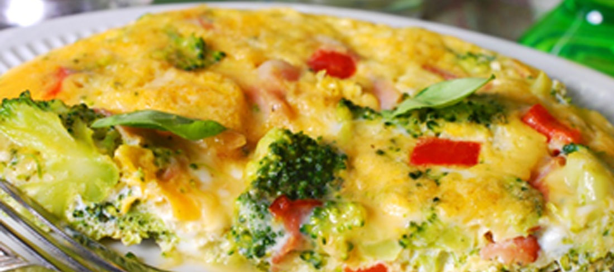

PLATOS TIPICOS DE SEMANA SANTA EN COCHABAMBA-BOLIVIA

Chaque de Queso
Es un plato tradicional de Semana Santa en Cochabamba, que consiste en una especie de tortilla o frittata hecha con huevos, queso, cebolla y perejil. Se sirve caliente y es una opción popular para el Viernes Santo.
Fricasé de Conejo
El fricasé es un guiso espeso y sabroso, en Cochabamba es común prepararlo con conejo durante la Semana Santa. Se cocina con papas, cebolla, tomate, ají y especias, y se sirve caliente acompañado de arroz
Tawa Tawa
Es un plato a base de pescado fresco, típico de la región de Cochabamba para Semana Santa. El pescado se sazona con ajo, cebolla, tomate, ají y limón, y se cocina a la parrilla o en un horno de barro. Se sirve caliente y es una opción deliciosa y saludable para la temporada.